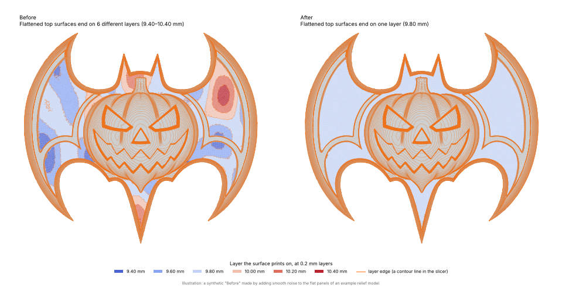

What it fixes
Generated models (reliefs, lithophanes, marching-cubes or AI meshes) often have surfaces that are meant to be flat but wobble by a fraction of a millimetre. A slicer cuts such a surface at every layer it wanders through, so the printed top is covered in layer lines at odd places.
This tool finds those surfaces and moves their vertices, in z only, onto one layer boundary, so each of them prints on a single layer. Domes, ramps, walls and raised blocks are left alone.

Try it on your model
Private by design: your file is processed on this page and is never uploaded anywhere.
Starting the Python engine… the first visit downloads the engine (about 25 MB), which your browser then keeps.
Result
What changed
Always check the result in your slicer’s layer preview before you print.
Good to know
- Assumes the model is in millimetres with z up; heights are measured from its lowest point, where a slicer puts the bed.
- Only horizontal surfaces (tops and ceilings) are changed. A gently crowned plate or shallow ramp that varies by less than the setting above looks the same as a wobbly flat surface; lower the setting to protect it.
- Surfaces that wobble by about 1.2 mm or less are the reliable case; towards 2 mm a surface can end up only partly flattened.
- Very large models (over about 1.5 million triangles) can exhaust a browser tab’s memory. Use the command-line version for those.